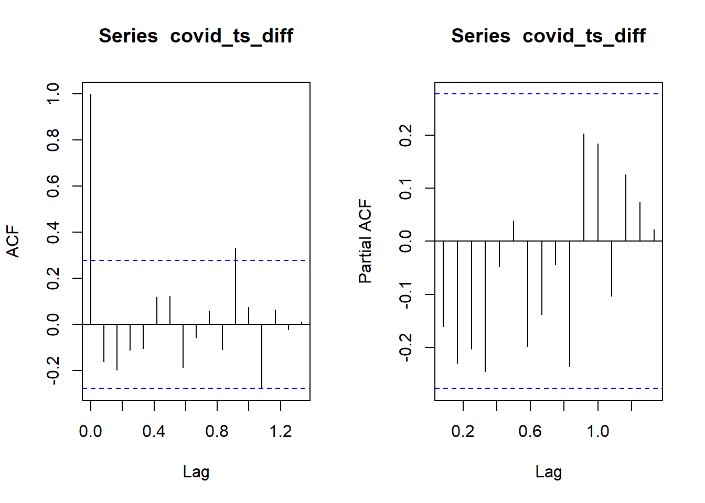
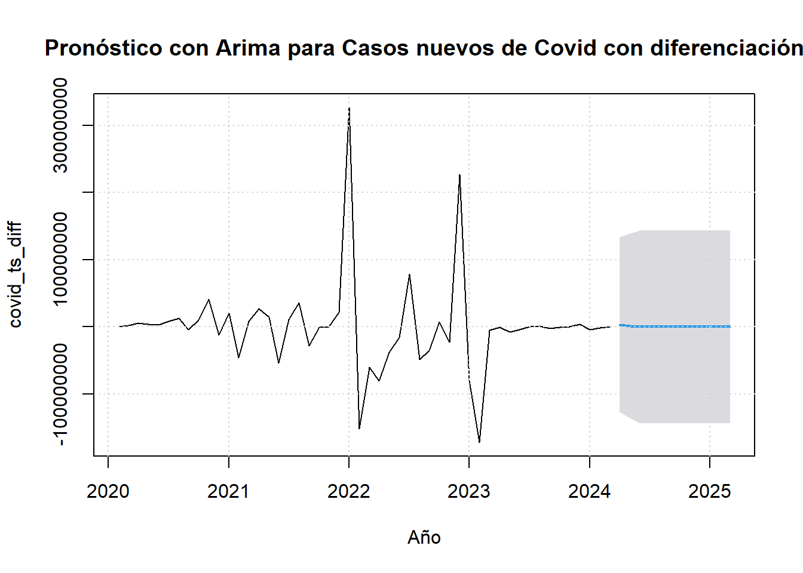
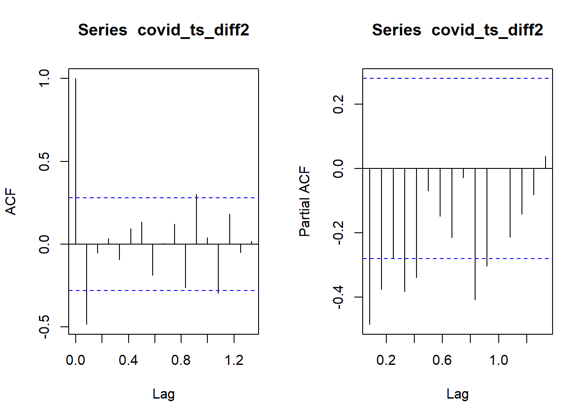
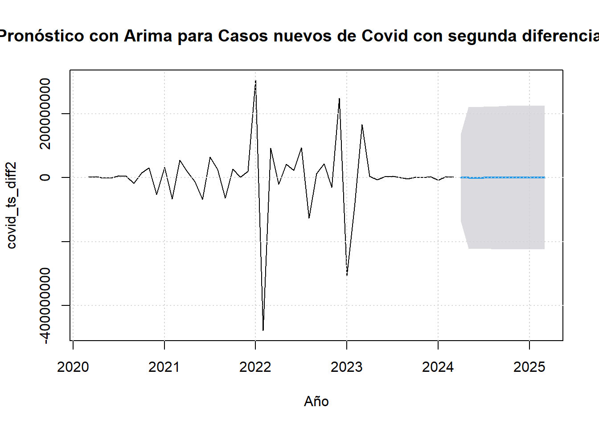
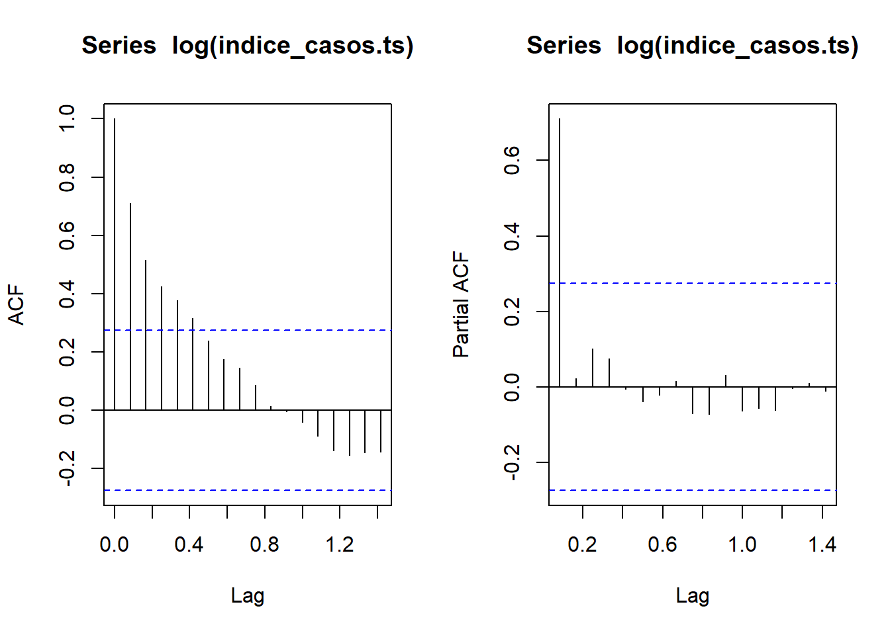
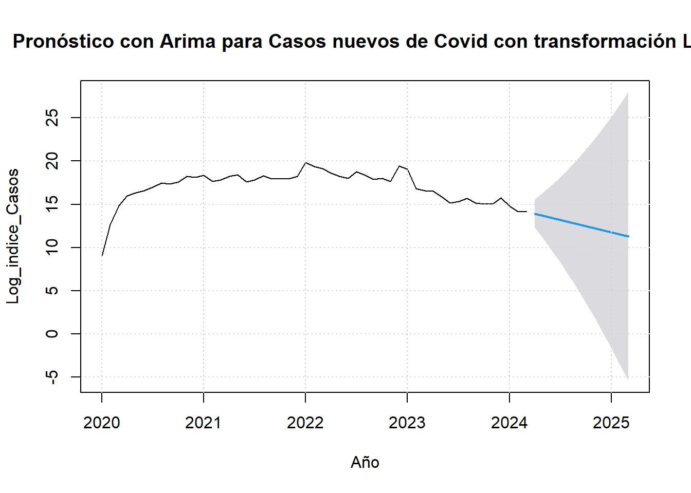
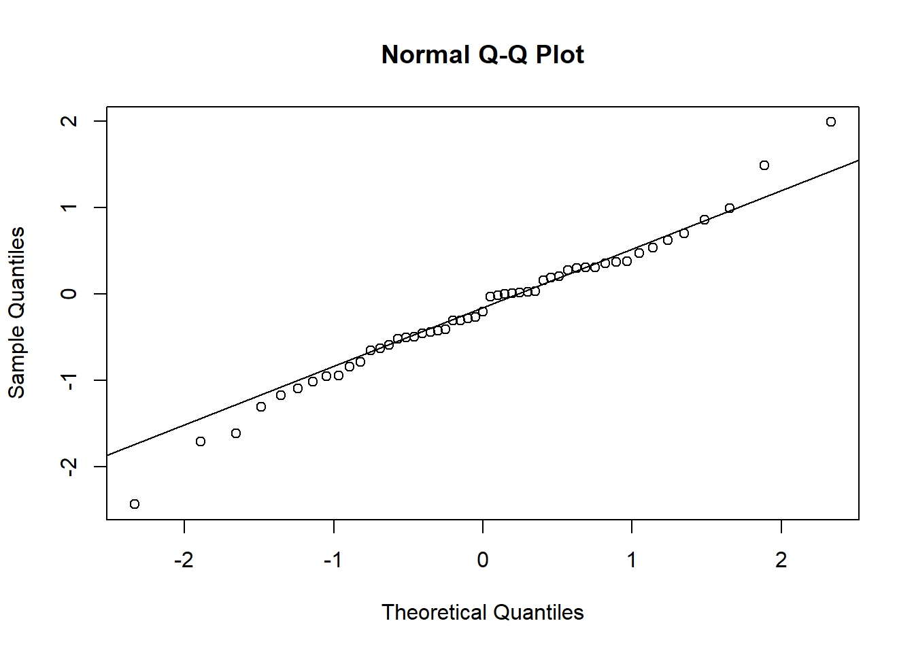

5 Modelos estacionarios en series de tiempo: Metodología Box-Jenkins
Como se expuso en el punto 3. de este documento, el valor p de la prueba de Dickey-Fuller aumentado (ADF)es 0.4587, indica que no hay suficiente evidencia para rechazar la hipótesis nula de que la serie no es estacionaria, en estos casos, se requeriría transformar o diferenciar los datos para que sean estacionarios.
En ese caso se aplicó una primera diferenciación en la variable covid_ts_diff dónde se obtuvo un valor p menor de 0.01, indica que ya es posible rechazar la hipótesis nula y concluir que la serie es estacionaria después de la primera diferenciación.
Se realiza gráfico de las Funciones de autocovarianza (ACF) y autocorrelación (PACF):

Teniendo en cuenta esto, se procede a aplicar el modelo sugerido ARIMA:
## Series: covid_ts_diff
## ARIMA(0,0,2) with zero mean
##
## Coefficients:
## ma1 ma2
## -0.3486 -0.3198
## s.e. 0.1298 0.1252
##
## sigma^2 = 4381003968820263: log likelihood = -970.59
## AIC=1947.18 AICc=1947.7 BIC=1952.91## Point Forecast Lo 95 Hi 95
## Apr 2024 3473922 -126254434 133202278
## May 2024 1533567 -135851075 138918209
## Jun 2024 0 -143510950 143510950
## Jul 2024 0 -143510950 143510950
## Aug 2024 0 -143510950 143510950
## Sep 2024 0 -143510950 143510950
## Oct 2024 0 -143510950 143510950
## Nov 2024 0 -143510950 143510950
## Dec 2024 0 -143510950 143510950
## Jan 2025 0 -143510950 143510950
## Feb 2025 0 -143510950 143510950
## Mar 2025 0 -143510950 143510950plot(pronostico_dif1,main="Pronóstico con Arima para Casos nuevos de Covid con diferenciación",xlab="Año",ylab="covid_ts_diff")
grid()
En resumen, el modelo ARIMA(0,0,2) con media cero refleja coeficientes significativos para los términos de media móvil, pero la alta varianza de los residuos y los valores altos de AIC, AICc y BIC indican que el modelo puede no ser óptimo y puede necesitar una revisión o ajuste adicional.
Además como se evidencia en la gráfica, si el pronóstico es el mismo para todos los meses, eso indica que hay un problema con el modelo ajustado.
Por lo anterior, se tomará la variable covid_ts_diff2 en dónde se procedió a realizar una segunda diferenciación para ver si se ajusta el modelo, antes de eso, nuevamente se procede a graficar las Funciones de autocovarianza (ACF) y autocorrelación (PACF) para estos datos:

## Series: covid_ts_diff2
## ARIMA(5,0,1) with zero mean
##
## Coefficients:
## ar1 ar2 ar3 ar4 ar5 ma1
## -0.2801 -0.3152 -0.2428 -0.222 -0.0264 -0.9891
## s.e. 0.1509 0.1517 0.1529 0.147 0.1432 0.2526
##
## sigma^2 = 4902090394961761: log likelihood = -954.1
## AIC=1922.21 AICc=1924.94 BIC=1935.45## Point Forecast Lo 95 Hi 95
## Apr 2024 265646.00 -137769977 138301269
## May 2024 450447.19 -221313463 222214357
## Jun 2024 -991831.27 -222813171 220829508
## Jul 2024 -303245.86 -223003659 222397167
## Aug 2024 194198.13 -222548543 222936939
## Sep 2024 174969.01 -224103564 224453502
## Oct 2024 171693.49 -224332235 224675622
## Nov 2024 -56898.40 -224831141 224717344
## Dec 2024 -115769.83 -224895620 224664080
## Jan 2025 -35286.01 -224815532 224744960
## Feb 2025 17456.74 -224809812 224844726
## Mar 2025 42439.07 -224791062 224875940plot(pronostico_dif2,main="Pronóstico con Arima para Casos nuevos de Covid con segunda diferenciación",xlab="Año",ylab="covid_ts_diff2")
grid()
Este modelo ARIMA indica que se utilizan cinco términos autorregresivos (AR) y un término de media móvil (MA), sin aplicar diferenciación (I), y el modelo no incluye un término constante distinto de cero. En resumen, el modelo ARIMA(5,0,1) parece capturar bien la estructura de la serie temporal “covid_ts_diff2”, con coeficientes significativos para los términos AR y MA. Sin embargo, siempre es importante validar el modelo y considerar si hay margen para mejorar el ajuste.
Ademas el pronóstico demostrado en la gráfica presenta valores muy pequeños para todos los meses.
Por lo anterior, se procede a aplicar logaritmo a la serie inicial para ajustar la estacionariedad y para poder mejorar el pronóstico, al igual que en los dos casos anteriores, se realiza primero el gráfico de las Funciones de autocovarianza (ACF) y autocorrelación (PACF):

Se continua con el cálculo:
## Series: log(indice_casos.ts)
## ARIMA(0,2,1)
##
## Coefficients:
## ma1
## -0.6825
## s.e. 0.1537
##
## sigma^2 = 0.692: log likelihood = -60.32
## AIC=124.63 AICc=124.89 BIC=128.42## Point Forecast Lo 95 Hi 95
## Apr 2024 13.91272 12.2822872 15.54315
## May 2024 13.67222 10.9754127 16.36902
## Jun 2024 13.43172 9.6397013 17.22373
## Jul 2024 13.19122 8.2400339 18.14240
## Aug 2024 12.95072 6.7690286 19.13241
## Sep 2024 12.71022 5.2260618 20.19438
## Oct 2024 12.46972 3.6126204 21.32682
## Nov 2024 12.22922 1.9308656 22.52758
## Dec 2024 11.98872 0.1831147 23.79433
## Jan 2025 11.74822 -1.6283594 25.12480
## Feb 2025 11.50772 -3.5014043 26.51685
## Mar 2025 11.26722 -5.4340117 27.96846plot(pronostico_log,main="Pronóstico con Arima para Casos nuevos de Covid con transformación Log",xlab="Año",ylab="Log_indice_Casos")
grid()
De acuerdo con los resultados, se puede evidenciar que este modelo ARIMA indica que se utiliza un término de media móvil (MA) de orden 1 (q=1), sin términos autorregresivos (AR) (p=0), y se ha aplicado una diferenciación de segundo orden (d=2) a la serie temporal original.
El modelo ARIMA (0,2,1) ajustado a la serie con transformación log, proporciona una aproximación adecuada, con un solo término de media móvil y una diferenciación de segundo orden. Al aplicar esta transformación se obtiene un pronóstico más acertado, el cual también refleja una tendencia de disminución en los próximos 12 meses, lo que concuerda con la realidad observada en los nuevos casos de Covid. Por lo tanto, este pronóstico puede ser considerado como acertado para esta serie temporal.
Teniendo en cuenta lo anterior, se procede a calcular y graficar los residuales:
## Jan Feb Mar Apr May
## 2020 0.004026955 -0.003973338 -1.172869131 -1.618126602 -1.714506050
## 2021 -0.032750553 -0.958691330 0.201545740 0.366894031 0.020677895
## 2022 1.490751161 -1.020678795 -0.498599225 -0.594446133 -0.272419992
## 2023 -0.788807669 -2.437727444 0.304434050 0.468206023 -0.310354897
## 2024 -1.093113677 -0.459642799 0.354185813
## Jun Jul Aug Sep Oct
## 2020 -1.307291818 -0.654882360 -0.445398887 -0.847633672 -0.206573702
## 2021 -0.950877561 0.375597198 0.535475927 -0.505885747 0.013879699
## 2022 -0.019412721 0.989042551 -0.522673348 -0.411204652 0.304017292
## 2023 -0.281681198 0.700648947 0.620107886 -0.426759772 0.158337702
## 2024
## Nov Dec
## 2020 0.272167997 -0.635556975
## 2021 0.028526950 0.294499517
## 2022 -0.312781418 1.988284537
## 2023 0.185991119 0.854329817
## 2024
Los residuales representan la diferencia entre los valores observados y los valores predichos por el modelo. En este contexto, los residuales son las discrepancias entre los valores reales y los valores pronosticados para cada mes de los años 2020 a 2023.
Ahora aplicaremos el Test Shapiro con el fin de validar si los residuales presentan una distribución normal:
##
## Shapiro-Wilk normality test
##
## data: residuales
## W = 0.98325, p-value = 0.6831Se puede evidenciar que el valor W =0.98 es cercano a 1, lo que significa que los residuales no se desvían significativamente de una distribución normal, ya que cuanto más cercano esté a 1, más consistentes son los datos con una distribución normal.
Por otro lado con el valor p se puede observar si los datos provienen de una población con una distribución normal. Un valor p alto (generalmente mayor que 0.05) indica que no hay suficiente evidencia para rechazar la hipótesis nula de que los datos provienen de una distribución normal. En este caso, el valor p es 0.6831, lo que sugiere que los datos tienen una distribución normal, .
Teniendo en cuenta lo anterior, se puede determinar que el modelo ARIMA ajustado es adecuado para los datos.
Finalmente aplicamos el Box-Ljung test:
##
## Box-Ljung test
##
## data: residuales
## X-squared = 0.77733, df = 1, p-value = 0.378El resultado del test de Box-Ljung X-squared = 0.77733 y p = 0.378 indican que no hay suficiente evidencia para afirmar que exista autocorrelación significativa en los residuales del modelo de series temporales. Por lo tanto, no se puede afirmar que haya autocorrelación en los residuales.